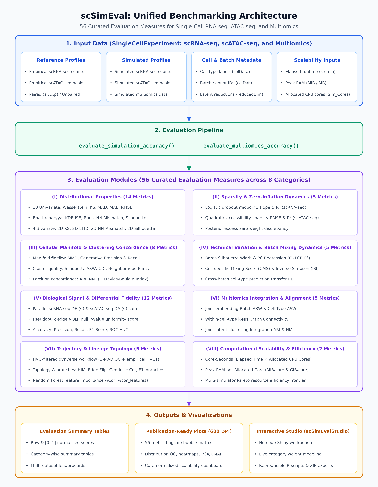

Evaluate Comprehensive Simulation Accuracy (Unimodal SingleCellExperiment)
Source:R/09_evaluate_benchmark.R
evaluate_simulation_accuracy.RdComputes distribution distances, cellular and feature-level properties,
zero-inflation curves, clustering concordance, batch mixing, differential
expression/accessibility fidelity, trajectory topology, and computational
scalability between reference and simulated SingleCellExperiment objects.
Users starting from Seurat objects should convert via
Seurat::as.SingleCellExperiment().
Usage
evaluate_simulation_accuracy(
ref_sce,
sim_sce,
cell_type_col = "cell_type",
batch_col = "batch",
modality = NULL,
compute_bivariate = TRUE,
threads = 1L,
memory_mb = NULL,
elapsed_time = NULL,
time_unit = c("seconds", "minutes"),
memory_unit = c("MiB", "MB"),
sim_cores = NULL,
trajectory_num_trees = 10000L,
include_trajectory = TRUE,
include_downstream = TRUE,
verbose = TRUE
)Arguments
- ref_sce
Reference
SingleCellExperimentobject.- sim_sce
Simulated
SingleCellExperimentobject.- cell_type_col
Column name in
colDatacontaining cell-type labels (default"cell_type").- batch_col
Column name in
colDatacontaining batch/replicate labels (default"batch").- modality
Optional modality hint (
"scRNA-seq"or"scATAC-seq"); auto-detected ifNULL.- compute_bivariate
Logical, whether to compute 2D bivariate tests. Default is
TRUE.- threads
Integer number of parallel worker threads. Default is
1L.- memory_mb
Optional numeric peak memory allocation (in
memory_unit).- elapsed_time
Optional numeric wall-clock elapsed runtime (in
time_unit).- time_unit
Unit of
elapsed_time:"seconds"(default) or"minutes".- memory_unit
Unit of
memory_mb:"MiB"(default) or"MB".- sim_cores
Optional positive integer specifying CPU cores used by the simulator.
- trajectory_num_trees
Number of Random Forest trees for Category VII
wcor_features(default10000L).- include_trajectory
Logical; whether to evaluate Category VII trajectory metrics for scRNA-seq. Default
TRUE.- include_downstream
Logical; whether to evaluate Categories III, IV, and V downstream metrics. Default
TRUE.- verbose
Logical, whether to print progress messages. Default is
TRUE.
Value
A named list containing tidy summaries and detailed category results:
- metrics_summary_table
Data frame with columns
Category,Property,Metric,Value(andSim_Coresif provided).- cell_metrics
Named list of per-property univariate metric lists at cell resolution.
- feature_metrics
Named list of per-property univariate metric lists at feature resolution.
- bivariate_metrics
Named list of 2D bivariate metric comparisons.
- zero_probability_curve
Category II scRNA-seq dropout curve results, or
NULL.- accessibility_sparsity_curve
Category II scATAC-seq sparsity curve results, or
NULL.- excess_zero_weights
List with
refandsimexcess-zero probability weights.- generative_manifold
List with
mmdandprecision_recallgenerative manifold scores.- ref_properties
List containing
cellandfeatureproperty vectors extracted fromref_sce.- sim_properties
List containing
cellandfeatureproperty vectors extracted fromsim_sce.- batch_effects
Category IV batch mixing metrics list, or
NULL.- biological_signal
Category V pseudobulk DE/DA fidelity results, or
NULL.- trajectory
Category VII dynverse trajectory evaluation results, or
NULL.- resource_usage
Normalized Category VIII scalability list (
core_seconds,memory_per_core_mib,memory_mb,elapsed_time,sim_cores).
Details

Metric Measurement Capacity across 4 Analysis Options (56 Evaluation Measures Suite):
Cell-type and batch annotations are retrieved directly from colData(ref_sce) and
colData(sim_sce) using cell_type_col and batch_col.
1. scRNA-seq (45 Metrics): Categories I, II, III, IV, V, VII, and VIII.
2. scATAC-seq (32 Metrics): Categories I, II, III, IV, V, and VIII (trajectory skipped for ATAC).
3. Paired Multiomics (56 Metrics): All 8 categories (I–VIII) via
evaluate_multiomics_accuracy.4. Unpaired Multiomics (51 Metrics): All 8 categories omitting 5 cell-matched pairing metrics.
Examples
data(example_scrna, package = "scSimEval")
res <- evaluate_simulation_accuracy(example_scrna$ref, example_scrna$sim,
include_trajectory = FALSE, verbose = FALSE)
#> calcNormFactors has been renamed to normLibSizes
#> Warning: no non-missing arguments to max; returning -Inf
#> Warning: no non-missing arguments to max; returning -Inf
#> Warning: no non-missing arguments to max; returning -Inf
#> calcNormFactors has been renamed to normLibSizes
#> Warning: no non-missing arguments to max; returning -Inf
#> Warning: no non-missing arguments to max; returning -Inf
#> Warning: no non-missing arguments to max; returning -Inf
#> Warning: no non-missing arguments to max; returning -Inf
#> Warning: no non-missing arguments to max; returning -Inf
#> calcNormFactors has been renamed to normLibSizes
#> calcNormFactors has been renamed to normLibSizes
#> calcNormFactors has been renamed to normLibSizes
#> calcNormFactors has been renamed to normLibSizes
#> calcNormFactors has been renamed to normLibSizes
#> calcNormFactors has been renamed to normLibSizes
#> calcNormFactors has been renamed to normLibSizes
#> calcNormFactors has been renamed to normLibSizes
#> calcNormFactors has been renamed to normLibSizes
#> calcNormFactors has been renamed to normLibSizes
#> calcNormFactors has been renamed to normLibSizes
#> calcNormFactors has been renamed to normLibSizes
#> calcNormFactors has been renamed to normLibSizes
#> calcNormFactors has been renamed to normLibSizes
#> calcNormFactors has been renamed to normLibSizes
#> calcNormFactors has been renamed to normLibSizes
#> calcNormFactors has been renamed to normLibSizes
#> calcNormFactors has been renamed to normLibSizes
#> calcNormFactors has been renamed to normLibSizes
#> calcNormFactors has been renamed to normLibSizes
#> calcNormFactors has been renamed to normLibSizes
#> calcNormFactors has been renamed to normLibSizes
#> calcNormFactors has been renamed to normLibSizes
#> calcNormFactors has been renamed to normLibSizes
#> calcNormFactors has been renamed to normLibSizes
#> calcNormFactors has been renamed to normLibSizes
#> calcNormFactors has been renamed to normLibSizes
#> calcNormFactors has been renamed to normLibSizes
#> calcNormFactors has been renamed to normLibSizes
#> calcNormFactors has been renamed to normLibSizes
#> calcNormFactors has been renamed to normLibSizes
#> calcNormFactors has been renamed to normLibSizes
#> calcNormFactors has been renamed to normLibSizes
#> calcNormFactors has been renamed to normLibSizes
#> calcNormFactors has been renamed to normLibSizes
#> calcNormFactors has been renamed to normLibSizes
#> calcNormFactors has been renamed to normLibSizes
#> calcNormFactors has been renamed to normLibSizes
#> calcNormFactors has been renamed to normLibSizes
#> calcNormFactors has been renamed to normLibSizes
#> calcNormFactors has been renamed to normLibSizes
#> calcNormFactors has been renamed to normLibSizes
#> calcNormFactors has been renamed to normLibSizes
#> calcNormFactors has been renamed to normLibSizes
#> calcNormFactors has been renamed to normLibSizes
#> calcNormFactors has been renamed to normLibSizes
#> calcNormFactors has been renamed to normLibSizes
#> calcNormFactors has been renamed to normLibSizes
#> calcNormFactors has been renamed to normLibSizes
#> calcNormFactors has been renamed to normLibSizes
#> calcNormFactors has been renamed to normLibSizes
#> calcNormFactors has been renamed to normLibSizes
#> calcNormFactors has been renamed to normLibSizes
#> calcNormFactors has been renamed to normLibSizes
#> calcNormFactors has been renamed to normLibSizes
#> calcNormFactors has been renamed to normLibSizes